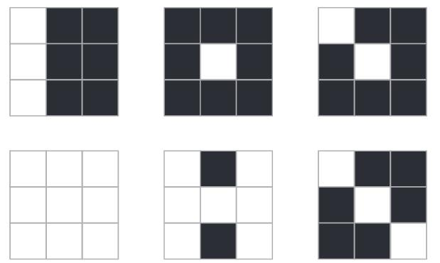

矩阵的秩是矩阵的一个重要数值特征, 是线性代数中的一个重要概念. 为了建立矩阵的秩的概念, 先给出矩阵的子式的定义.
定义 $1$：
例如, 在矩阵
$$
\boldsymbol{A}=\left(\begin{array}{cccc}
3 & 2 & -1 & -3 \\
2 & -1 & 3 & 1 \\
4 & 5 & -5 & -6
\end{array}\right)
$$
中, 取第 $1, 2$ 行和第 $2, 4$ 列交叉点上的元, 组成的二阶行列式
$$
\left|\begin{array}{rr}
2 & -3 \\
-1 & 1
\end{array}\right|
$$
为 $\boldsymbol{A}$ 的一个二阶子式.
有了子式的概念, 就可以定义矩阵的秩.
定义 $2$：
由行列式的性质可知, $\boldsymbol{A}$ 中所有 $r+1$ 阶子式全等于零时, 所有高于 $r+1$ 阶的子式 也全等于零, 因此 $\boldsymbol{A}$ 的秩 $R(\boldsymbol{A})$ 就是 $\boldsymbol{A}$ 中不等于零的子式的最高阶数.
显然, 对任意矩阵 $\boldsymbol{A}$, $R(\boldsymbol{A})$ 是惟一的, 但其最高阶非零子式一般是不惟一的.
定义 $2$ 实际上包含两部分: 一部分是, $R(\boldsymbol{A}) \geqslant r$ 的充要条件是 $\boldsymbol{A}$ 有一个 $r$ 阶子式不为零; 另一部分是, $R(\boldsymbol{A}) \leqslant r$ 的充要条件是 $\boldsymbol{A}$ 的所有 $r+1$ 阶子式全为零.
例 $1$：
解：
从例 $1$ 可看出, 根据定义求秩是很困难的, 下面给出求矩阵秩的初等变换法.
定理 $1$：
证明：
例 $2$：
解：
利用SageMath在线代码模块求解例 $2$
例 $3$：
解：
计算图2.4 中黑白图像对应矩阵的行列式和秩. 尝试比较行列式与秩的相似和不同之处.

图2.4
事实上, 将矩阵 $\boldsymbol{A}$ 用行初等变换化为行阶梯形矩阵, 则行阶梯形矩阵非零行的行数就是 $\boldsymbol{A}$ 的秩,
即: 设 $\boldsymbol{A}$ 为 $m \times n$ 矩阵, 则 $R(\boldsymbol{A})=r$ 的充要条件是通过行初等变换能将 $\boldsymbol{A}$ 化为具有 $r$ 个非零行的行阶梯形矩阵.
例 $4$：
解：
推论 $1$：
证明：
例 $5$：
解：
关于矩阵的秩, 有如下性质:
定理 $2$：
证明：
由定理 $2$ 的 $(1)$ 知, 对于 $n$ 阶矩阵 $\boldsymbol{A}$, $\operatorname{det} \boldsymbol{A}=0$ 的充要条件是 $R(\boldsymbol{A}) < n$.
因而, 可逆矩阵又称为满秩矩阵, 不可逆矩阵又称为降秩矩阵或退化矩阵.
例 $6$：
证明：
对于例 $6$ 中 $R(\boldsymbol{A})=n-1$ 的情形, 将在 $\S 3.4$ 的例 $5$ 中给出.
定理 $3$：
证明：
定理 $3$ 也说明, 对任意矩阵 $\boldsymbol{A}$, 存在可逆矩阵 $\boldsymbol{K}, \boldsymbol{S}$, 使
$$
\boldsymbol{A}=\boldsymbol{K}\left(\begin{array}{ll}
\boldsymbol{I}_{r} & \boldsymbol{O} \\
\boldsymbol{O} & \boldsymbol{O}
\end{array}\right) \boldsymbol{S}, \quad R(\boldsymbol{A})=r.
$$
推论 $2$：
例 $7$：
解：
例 $8$：
证明：